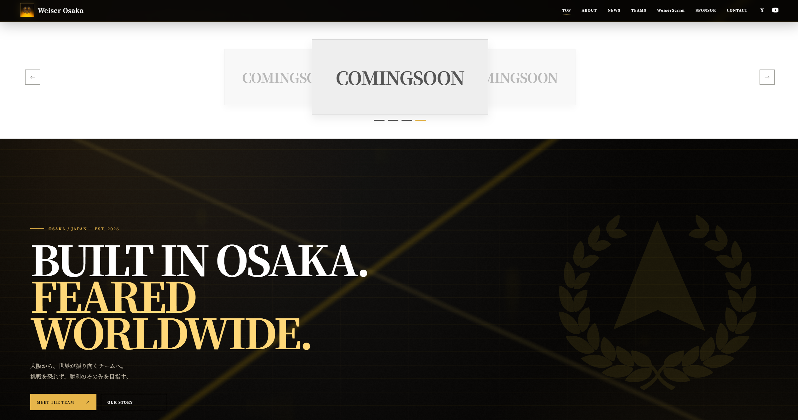
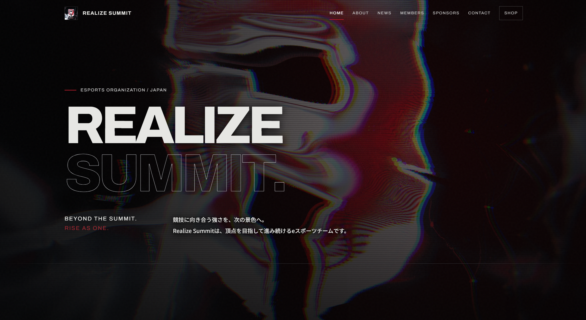
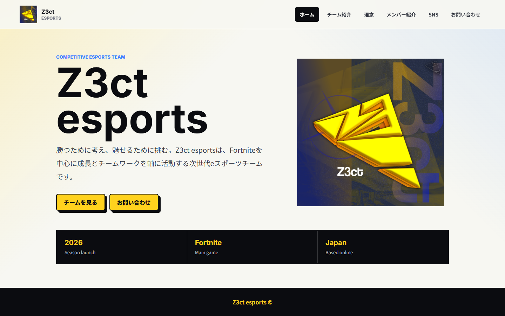
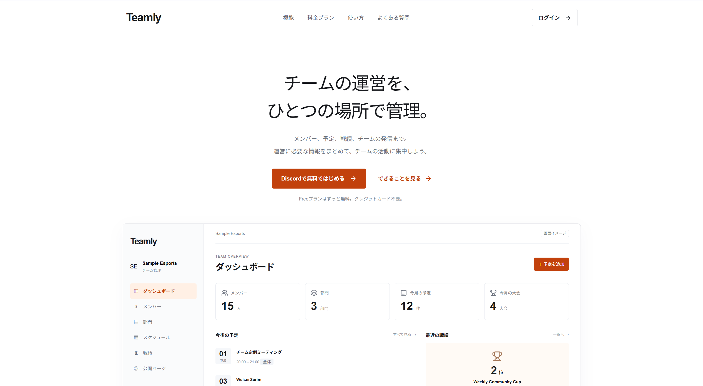
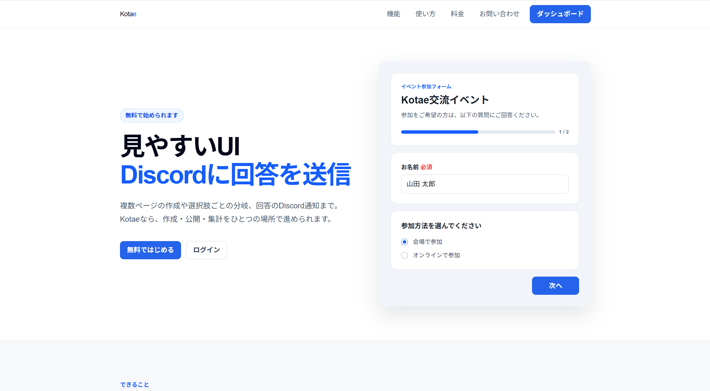
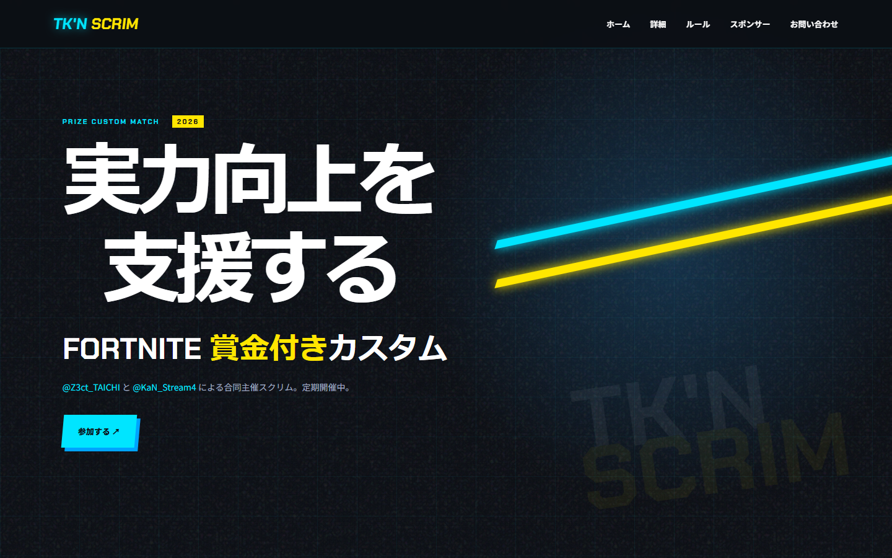
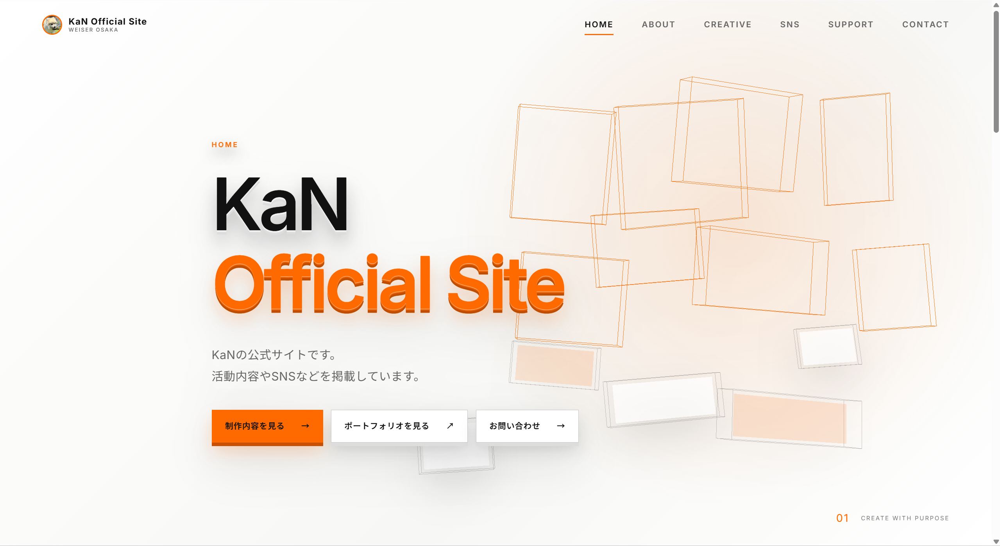
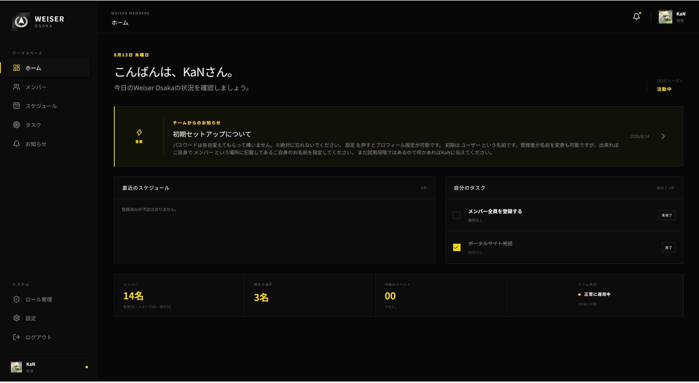

制作実績

大阪を拠点とするeスポーツチーム。KaNが現在運営で所属しております。

eスポーツチーム「Realize Summit」の公式サイトです。

Z3ct esportsの公式サイトです。

メンバーや予定、戦績など、チーム運営に必要な情報をまとめて管理できるサービスです。

フォームの作成・公開・集計と、回答のDiscord通知をまとめて行えるサービスです。

Fortnite賞金付きスクリムの開催情報を掲載する大会サイトです。

活動内容と制作実績を発信するKaNのオフィシャルサイトです。

メンバー、スケジュール、タスクやお知らせを一元管理するチームポータルサイトです。